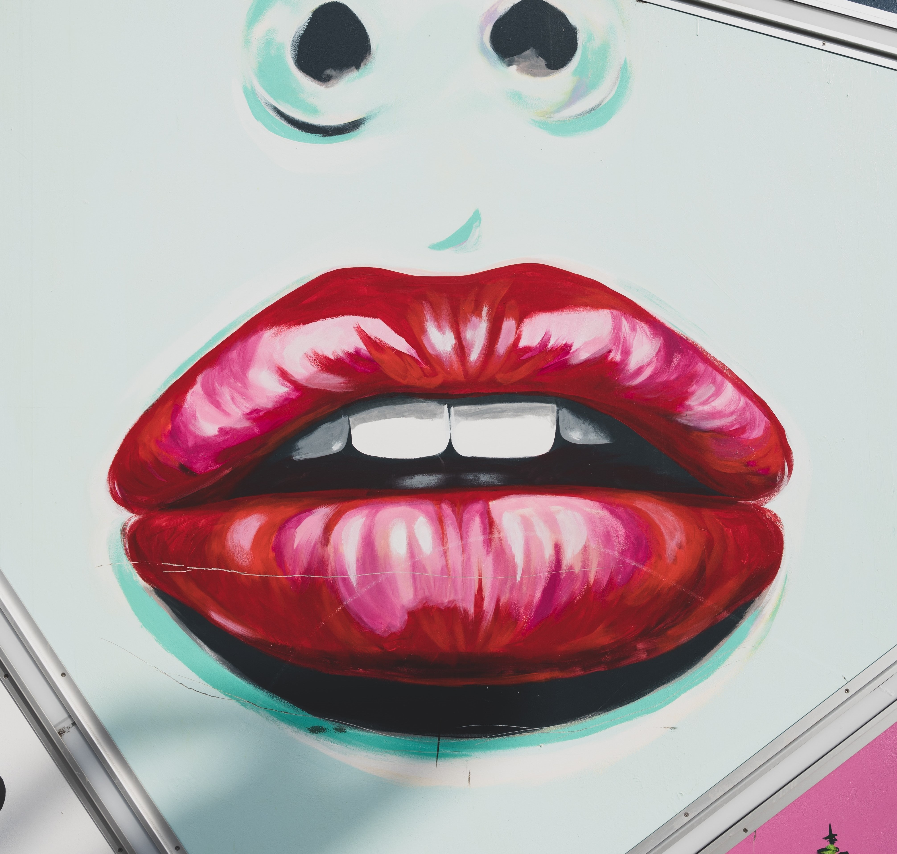

概要
あなたが誰か知らない人を見るとき、十中八九顔から見ると思います
イケメン？美人？それがすべてじゃない
顔のフェチポイントを紹介していきます
髪フェチ
男性に多いフェチ。髪は人によって個性が現れますが、ショートヘアからロングヘアーなどの髪型から、髪色や質感、シャンプーの香りが好きなど様々存在します。近年では「なんじゃその髪色」「個性的な髪型だなぁ」という場面は2次元でも3次元でも多い印象。平安時代から詩にするほど男性がひかれる由緒正しいフェチ

目フェチ
近年アニメなどで「〇条悟」など特徴的な目を持つ人が注目されています。「目は口ほどものをいう」といわれる通り、感情を示すのにも大事な部分。目の大小だったり、黒目の大きさ、目の色合いなどといった目自体の好きから、二重や涙袋、まつ毛の長さなど、こだわりポイントが多い印象。ちなみに著者はオッドアイが好きです
鼻フェチ
男性にも女性にも小数いるフェチ。鼻の形や大きさ、鼻筋の良さなどこだわりがある人がいます。例えば、わし鼻が好きな人や、鼻筋が通っている人が好きだったり、小さい鼻が好きなど様々な人がいます。某海賊マンガの狙撃手のような鼻が好きな人もいるとか

口フェチ
男性が多め。人と話すとき必然的に目を向ける場所であり、種類としては唇が好きなのや歯並びが整っている人が好きなどなど。他にも、笑顔が好きなどこだわりを持ってる人がいます。そういえば昔テレビ番組で女優の唇の触感は何が一番近いのかという企画やってたなぁ

耳フェチ
比較的男性に多いフェチ。福耳など耳の形が好きという人や、イヤリングやピアスなど装飾品が好きな人がいます。髪の毛の合間からのぞかせる耳が好きだったり、アニメなどでよく主人公が見入る髪を耳にかける動作にドキッとさせられる人もいます。また、2次元における「エルフ」や「獣人」など少し特殊な耳が好きという人もいます。ヘッドフォンの位置間違えるなよ！